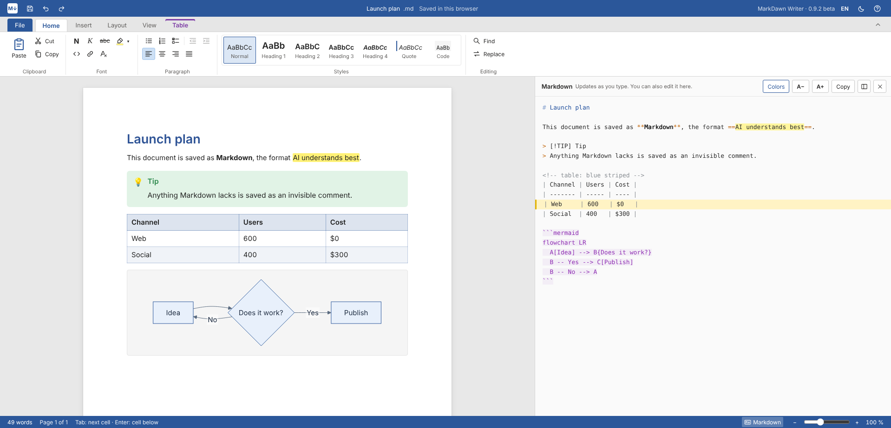
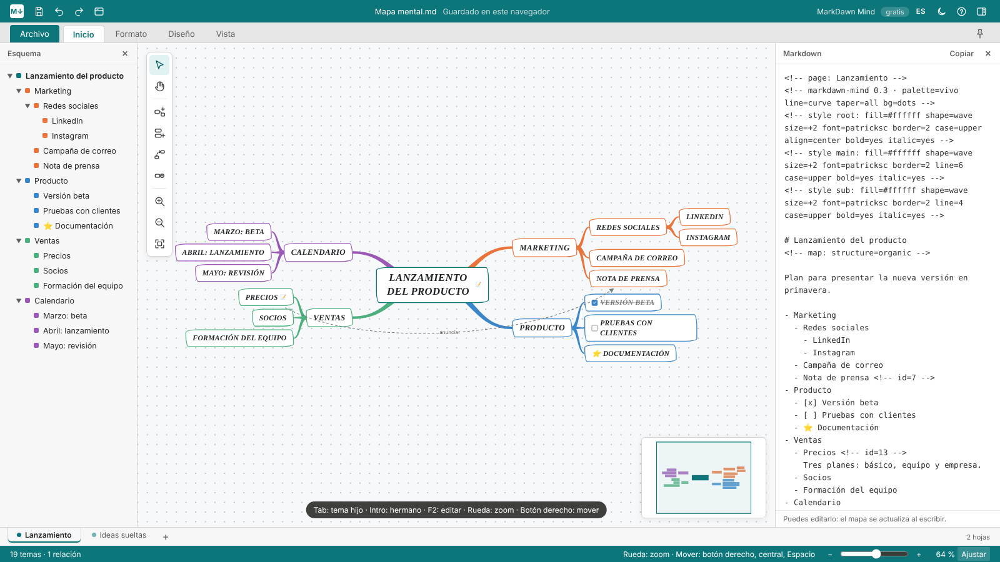

MarkDawn Writer Pro
Escribe como en Word, guarda en Markdown. Mover bloques, columnas y mapas mentales editables en el documento.
Abre la app e instálala desde el navegador: tendrá su propia ventana e icono, y funciona sin internet. Sin clave funciona como la versión gratuita; actívala con la clave de tu compra en Gumroad.

Escribe como en Word, guarda en Markdown. Mover bloques, columnas y mapas mentales editables en el documento.

Mapas mentales como en Office, guardados en Markdown, con todos los estilos, formas y estructuras.
Abre la app y pulsa el icono de instalar a la derecha de la barra de direcciones, o menú ⋯ → Aplicaciones → Instalar. Los archivos .md se podrán abrir con ella.
En Safari: Archivo → Añadir al Dock. En Chrome o Edge: el icono de instalar en la barra de direcciones.